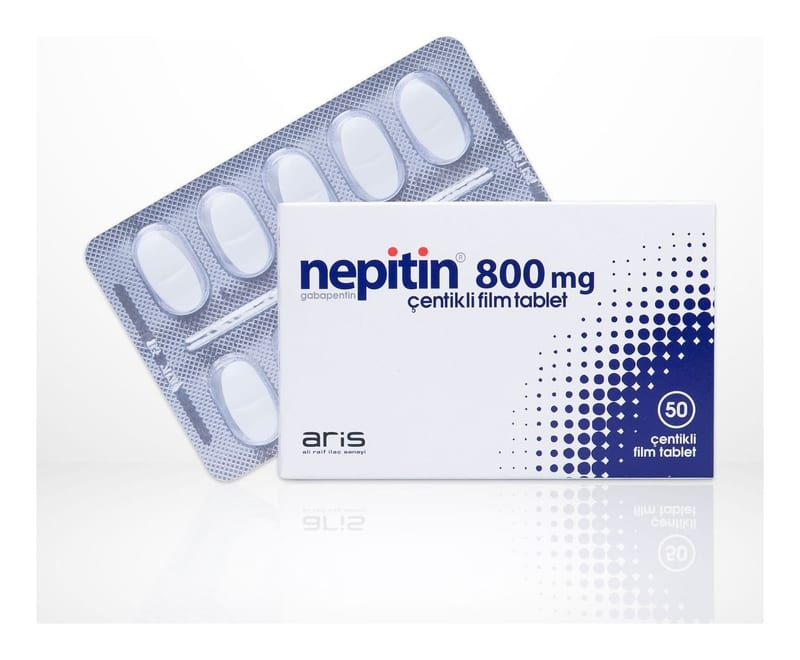

Nepitin 800 mg Centıklı Film Tablet, 100 Adet

Ne için kullanılır
KT · Bölüm 1• NEPİTİN®diğer antiepileptik ilaçlar olarak adlandırılan ilaç grubundadır. Bu ilaçlar sara (epilepsi) ve sinir dokusunun hasarına bağlı ağrı (nöropatik ağrı) tedavisinde kullanılır. • NEPİTİN®800 mg çentikli film tablet, 50 tablet içeren ambalajlarda bulunur. Her bir tablet 800 mg gabapentin içeren, beyaz, her iki yüzünde çentik bulunan oval film kaplı tabletlerdir.NEPİTİN®, başlangıçta beynin belirli kısımlarıyla sınırlı olan ve beynin diğer taraflarına yayılıp yayılmadığı belli olmayan değişik türlerdeki sara (epilepsi) nöbetlerinde kullanılır. Mevcut tedavi yeterli olmadığında, doktorunuz size ve 6 yaşından daha büyük olan çocuğunuza NEPİTİN®reçete edebilir. Doktor aksini belirtmedikçe, siz veya 6 yaşından büyük çocuğunuz tarafından mevcut tedaviye ek olarak NEPİTİN®kullanılmalıdır. Ayrıca NEPİTİN®12 yaş üzeri çocukları ve yetişkinleri tedavi etmek için tek başına kullanılabilir. • NEPİTİN®, sinir dokusunun hasarına bağlı ağrı (nöropatik ağrı) tedavisinde kullanılan bir ilaçtır. Ağrı hissi; sıcak, yakıcı, zonklama, çarpıntı, ateş, bıçak saplanması hissi gibi, acı, kramp girmesi, ağrı, karıncalanma, hissizlik, uyuşma, batma ve donma gibi çeşitli şekillerde tanımlanabilir.